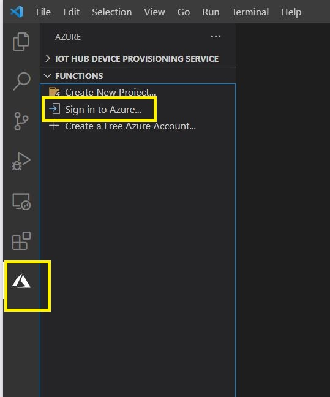

This workshop is in two parts that cover setting up access to the Azure cloud platform and configuration of your development environment:
Part 1 - Setting up your 'Azure for Students' subscription
Part 2 - Setup development environment
Part 3 - Test your Azure for Students subscription
In order to complete the module workshops and assessment you will need a free Azure for Students Subscription, no other cloud vendor is valid for the module so please ensure you only use Azure for all relevant work. You can only activate your free account using your university email address, no other email address can be used to activate the subscription so please do not attempt this. You can activate the subscription here.
When you have completed the registration navigate to https://portal.azure.com , and sign in using your university login credentials. Next, check your Azure for Students subscription is active by selecting the menu on the left by clicking the 'three lines' icon on the top left. Fro the menu that popsout select the 'Subscriptions' option and check you have an entry for the subscription as shown below. If you are having trouble activating your subscription please get help from the module team asap, it is your responsibility to activate your free subscription using your university email address, and it is mandatory to complete the assessment and carry out a large number of workshop tasks.
Some students may experience problems when trying to redeem the Azure for Students subscription. If this affects you, please email me and I will provide support during the physical workshop session.. You can still carry on and do the remainder of today's workshop as the Azure subscription will not be used for a few weeks.
The main development tool you will use is Visual Studio Code (VSC) with the required extensions for connecting to, and developing cloud services on Azure. The below guide walks you through the main steps of installing and configuring the required frameworks and VSC for use in the module, please do not use the 'Visual Studio', this is a completely different tool and not what we will be using in the module.
Frameworks
The main frameworks required are Microsoft .NET SDK Core 5.0.x (x64) and Microsoft .NET SDK Core 3.1.x - we need both versions for backwards compatability with some VSC extensions and libraries - please do not install newer versions if available (this lab was updated on 18th Feb 2021). Please download and install them for your Operating System, remember Windows is the recommended OS as this is what we support on our Lab machines.
Download and Install Microsoft .NET SDK Core 5.0.3 (x64) here, see below screenshot for info:
Download and Install Microsoft .NET SDK Core 3.1.12 here, see screenshot befow for more info:
Tools
We need several Azure supporting tools to aid your development work. We may add more as the module progresses but for now you should install the Azure Functions Core Tools package and the Azure Storage Explorer. Download and install the Azure Functions Core Tools here and the Azure Storage Explorer here.
Please download VSC code from here.. There are versions for Windows, Linux, and Mac. The workshops will be using the Windows version but the experience should be the same, unfortunately I cannot provide any support for installation/configuration issues with VSC on Linux or Mac. If using the Windows version please install the 'user installer 64bit' version:
VSC is a highly extensible development tool with lots of extensions available. We will mainly be uses Azure focused extensions for developing serverless functions in C#. For this please follow the instructions below to install the required VSC extensions
C# Extension
As you will be writing serverless functions in C#, please follow the steps below to install the C# extension for VSC:
1) Open VSC and click on the extensions icon (1) as shown below. (2) shows currently installed extensions - these may be different from yours, and (3) is where you search for extensions to install
2) Install the C# extension by folowing steps in below screenshot, ensuring it is the official Mirosoft extension:
3) Install the Azure Account extension (it may already be installed by default):
4) Install the Azure IoT Tools extension:
5) Install the Azure Database extension:

6) Install the Azure Storage extension

7) Finally, install the Azure Functions extension:
OK! That is all the extensions required for now but we may add more as the module progresses!
As you will do much of your development work in VSC, you will also carry out cloud-based testing (as well as local) of your code. In order to do this your VSC installation will need to be connected to your Azure for Students subscription via the Azure Account extension.
In VSC, follow the steps below to connect to your Azure for Students subscription


Now return to VSC and you will see your university email address for Azure on bottom left:
Click on your email address and at the top of VSC it will display your Azure for Students subscription name and ID:

Finally, if you are using a shared machine then you should sign-out of Azure in VSC. You can do this by pressing [CTRL]+[SHIFT]+[P} to bring up the VSC command pallete and type in sign out to find the command from the Azure Account extension:
At this point you should have your Azure for Students subscription setup as well as your VSC development environment with Visual Studio code. Please take the time to complete this workshop before next week's session. Next week you will set up an simulated IoT device that can send telemetry data to Azure, you will then set up a service app that will view the telemetry as it arrives as an event on Azure.